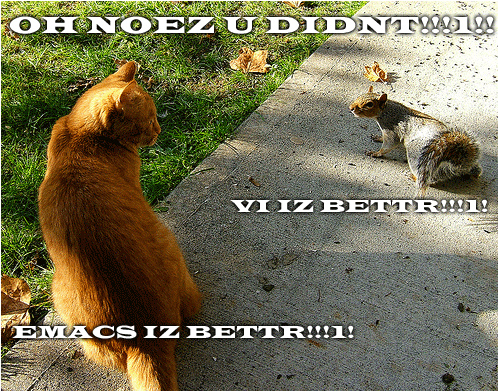
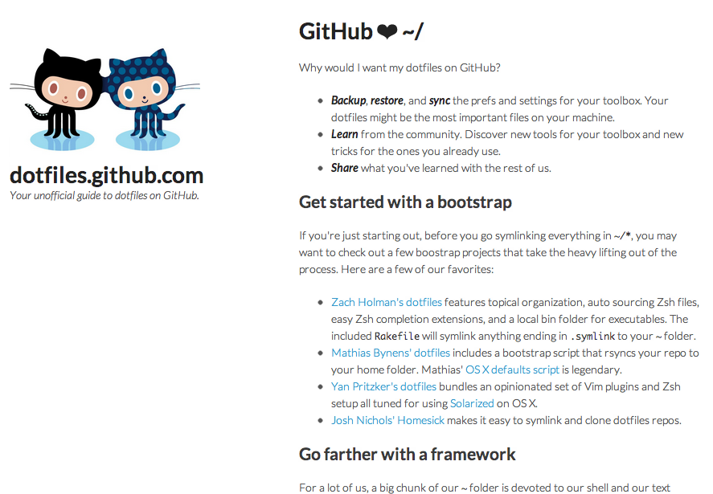
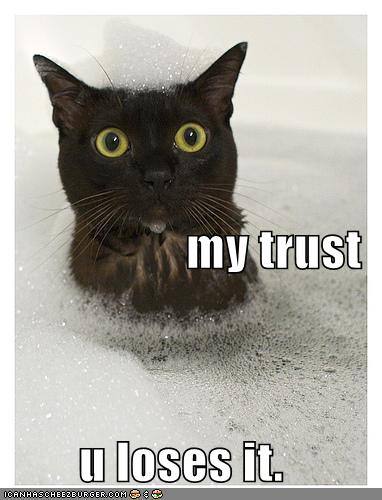
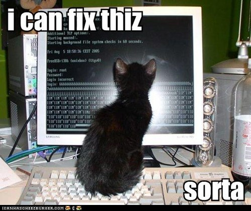
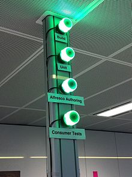
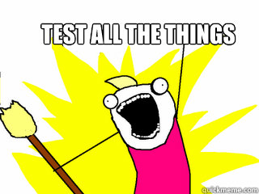

Improve your tool chain for
stress-free deployments
Omni Adams

Omni Adams
Glam Media
@omnicolor
http://omni-spot.blogspot.com
omni@digitaldarkness.com
- A little bit about me.
- Omni Adams
- Glam
- the Twitter
- check out my blog
- or
- send me an email
- last slide.
- boring, nobody cares
- about evolving toolchain
- start in same place
- writing hello world
- school projects
- no concept of tools
As we grow as developers, we realize there's more to learn.
→ and if we're ...
... good developers, we'll never really stop learning.
Pretty much all of us starts out the same way.
a team of one, happily coding along.


?
never heard of source control.
no staging environments before pushing.
No need to hide in shame, we all did it.
- if still doing it as professional
- embarassed

- for coding, editor most important
- time spent learning
- while you're learning, → soup it up

- ... soup it up
- for example, github hosts dotfiles
- lots of nerds upload theirs
- or you can → ask
ask
your
friends
- or make some new ones
- the community
So what goes into source control? Ev-er-y-thing.
Disk space is cheap, so →
Don't throw anything away. All code and configuration should be
saved.
I use two repositories: one for code, one for config.
Code is the same in all of your environments, except you don't push
tests to staging or production.
Configuration changes between environments. Your deploy script
pulls from the config repository depending on where you're pushing
to.

If you trust your developers, anyone can write to any repository.
If you don't trust your developers, nothing in this talk will save
you.
Why'd you hire them in the first place?
failure
is an
option ✓
is an option.
The philosophy is that it's better to fail here quickly than waste
QA's time checking a broken build on staging.

but if the build does break, you've got to drop everything and fix it
so it doesn't slow down your team.
... an email to the person that broke it.
or send one → to the whole team.
... to the whole team.
You can change the status → of an external build indicator.
... of an external build indicator.

You *need* to update the build indicator if you have one.

run code coverage if your build doesn't fail for falling code coverage
percent.
If you have a multiple stage integration pipeline you can fire off
the next level.
Smoke tests, unit tests, then integration tests.
Omni Adams
Glam Media
@omnicolor
http://omni-spot.blogspot.com
omni@digitaldarkness.com
Any questions?